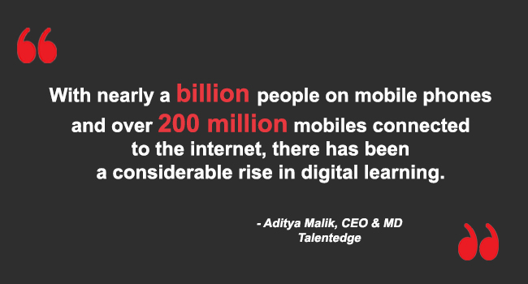
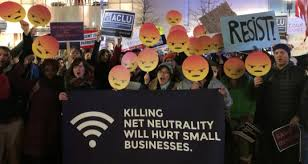

Social Impact of The Internet
The internet has a direct impact on our social interaction.
Has its pros and cons, with all accessibility that generate the internet start to tear apart social interaction in many levels.
Nowadays its possible to buy everything and hire every service via internet, everything.
 |
And the form that we are attached to it change the way that the media and distribution of information is been passed.
At the begging on the internet wasn't allowed to have any type of marketing or commercial usage over the internet and this was forbidden territory for these practises.
After it was open to public some form of marketing online start top spread via email at first and still to the days.
The possibility of stay connected using your computer ends up disconnecting the physical interaction between people,
where they are all together in to a social network at same time they are lonely in reality because everybody has their own things to do and accomplish.
The internet being offering fantastic opportunities and on the same time real risks
|  |  |
The Internet has some great positive effects. Some of these include:
Internet search engines are the best information retrieval systems available. They bring any kind of information for internet users, from local restaurants to international news.
The Internet provides some of the most effective means of communication among people, including online emailing and instant messaging.
The Internet makes possible for business and comp anies to do transactions with their clients and customers.
Thanks to the internet, people can take action and avoid adverse circumstances.
For instance, hurricane, storms and accidents can be tracked through the internet.
The internet has allowed the interchange of ideas and materials among scientists, university professors, and students, in addition to provide servers, resource centers and online tools for their research and scholar activities. Moreover, million of books, journals and other material are available through the internet because of the digitization of public domains material from libraries in the States and Europe.
This action enables people to learn all new sort of things.
Sometimes, the internet can have negative effects, including:
Illegal or inappropriate materials can be found in the internet.
Some people in recent years have illegally downloaded music or other copyrighted material for free.
This action has had a negative impact on the music industry and has led to several lawsuits.
The addiction to online social networks can disturb a person's way of living and professional activity.
Some criminals use the internet for spreading computer viruses or even intercepting credit card or bank details for spurious purposes.
we can say that humankind is now almost entirely connected
The Internet is the decisive technology of the Information Age, and with the explosion of wireless communication in the early twenty-first century,
Today, social networking sites are the preferred platforms for all kinds of activities, both business and personal, and sociability has dramatically increased
The virtual life is becoming more social than the physical life, but it is less a virtual reality than a real virtuality, facilitating real-life work and urban living.
Networked social movements have been particularly active since 2010, notably in the Arab revolutions against dictatorships and the protests against the management of the financial crisis.
|  |